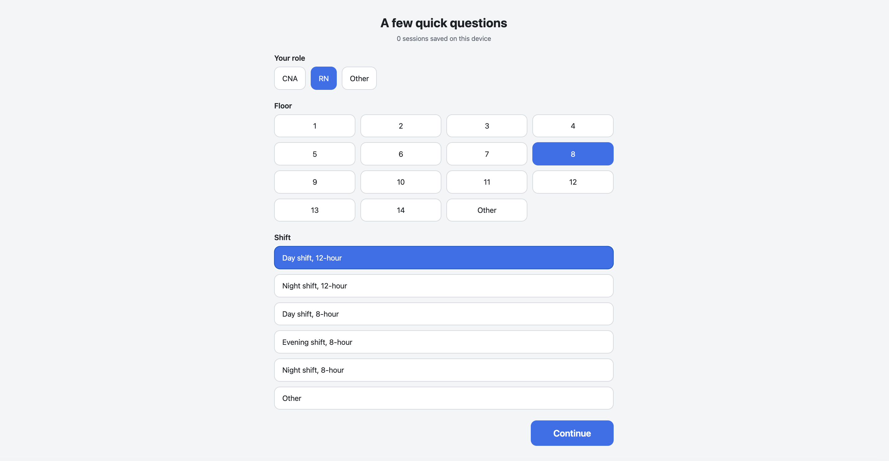
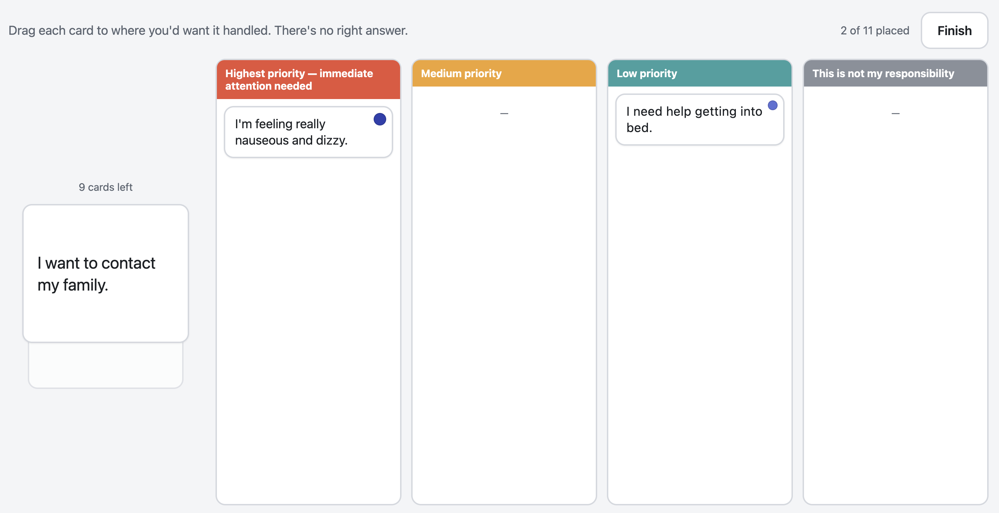

TLDR
- The assumption going in
- Requests should be scored on a single urgency scale and routed to the right role — nurse or aide — based on job title.
- What the research found
- Staff weren't using a single urgency scale. They were answering two separate questions at once — is this urgent and is this mine.
- Recommendation
- Separate urgency and responsibility into independent fields. Replace strict role-based routing with shared team visibility plus delegation. Give distress statements their own escalation path instead of a slot on the priority scale.
The problem
Norbert is a semi-autonomous companion robot that moves through a skilled nursing facility, checks in with residents, and takes vitals. During its interactions with patients, patients ask it for things — a blanket, water, help to the bathroom, a nurse. The robot was capturing those requests, but there was no direction of what should happen next.
The proposed design was a ticketing system: every request gets an urgency score, gets routed to the right role, and shows up somewhere for that person to acknowledge and close. However, this depended on three assumptions: clinical staff prioritize requests along a single urgency gradient, requests belong to roles in a binary way a system can encode, and that staff don't mind another screen or thing to keep track of in their shift.
There was also a real safety stake. If the robot relays a request badly, the failure isn't a bad user experience, but real clinical risk.
Research questions
- What kinds of patient requests should the robot relay at all?
- How do clinical staff naturally categorize the requests residents make between rounds?
- How do they assign urgency across realistic scenarios, and where is there consensus versus divergence?
- Who should own urgency assignment — the model, the staff member, or both?
- What speed-to-handle is acceptable at each urgency tier?
- Through what channel should requests be delivered?
I also wrote down the failure modes I was trying to catch before designing anything, and mapped each one to the activity that would surface it. Four mattered most: clinical risk being missed or delayed; a request captured but never acknowledged or never closed; staff burden high enough to erode trust in the system; and a small number of frequent requesters flooding the queue.
Building the instrument
To answer the prioritization questions, I needed a card sort. But participants were working nurses and CNAs who could give me only five to twelve minutes tops mid-shift, were standing up, and were usually in a hallway. I also couldn't count on network access, and I needed to be able to hand a tablet to the next person without losing the last one's data.
So I built one: a single-file web app that runs offline in a browser on a tablet.


What it captures
- Eleven request cards drawn from real requests the robot had captured, sorted into four buckets: highest priority, medium, low, and this is not my responsibility.
- A confidence rating for each priority placement — not sure, somewhat sure, very sure — so a fast confident call could be told apart from a guess.
- Role attribution for anything placed in "not my responsibility," so I could see where staff thought a request should go rather than just that it wasn't theirs.
- Behavioral telemetry: placement latency and how many times a card was moved before the participant settled. This is the part I'd have lost with paper cards, and it's what let me distinguish a fast confident routing decision from genuine hesitation.
- Role, unit, and shift for each session, plus an open text field at the end.
Note on the sample. n=12 for the card sort (8 nursing assistants, 3 registered nurses, 1 licensed practical nurse) and 6 interviews. This is a small, single-site, convenience sample of the staff available during my visits. The percentages below describe this group and are not estimates of a wider population. I'm reporting them because the role-based splits were large and consistent enough to change a design decision, not because it's translatable to another facility.
Findings
1. Staff didn't triage on a scale. They made two separate calls.
Around 71% of all card placements landed at one of two poles: highest priority or this is not my responsibility. Medium and low were comparatively unused.
Staff were answering two questions at once: is this urgent? and is this mine? The product's single priority field could only hold one of those answers, which is the root of the next finding.
2. Clinical symptom requests split sharply by role, in a way that strips urgency
The two clinical cards — chest pain, and nausea with dizziness — produced the most role-divergent result in the dataset, and the one with the most direct patient-safety relevance.
| Role | Placements |
|---|---|
| RN (n=3) | 6 highest priority |
| LPN (n=1) | 2 highest priority |
| CNA (n=8) | 4 highest priority · 2 low priority · 10 not my responsibility, routed to RN |
Every nurse placed both cards as highest priority, "very sure." Five of eight nursing assistants routed both to the nurse as "not my responsibility," and they did it fast, with a median of about one second. That was a confident decision, not hesitation, and escalating is the right instinct:
That's for the CNA — we have to pass that to the nurse. And that is high. You don't know what's going on there.
Nursing assistant
Everything depends on [what] the patient tell[s] you — you can't not do it. You have to go straight to [get the nurse].
Nursing assistant
The problem was the forced choice. A nursing assistant who knows chest pain is both urgent and not theirs picks the routing answer, because routing is what they're about to do. If the robot copied that logic, an urgent symptom would reach the nurse with no urgency attached. That's a system gap, not a staff judgment problem, and it was the most consequential finding of the study.
3. One request produced the widest disagreement and the lowest confidence in the study
A card combining a wish to go home with a wish to die had the lowest consensus in the study (no bucket drew more than a third of placements) and one of the highest revision counts. People kept changing their minds about it.
| Bucket | Placements |
|---|---|
| Highest priority | 4 |
| Medium priority | 4 |
| Low priority | 1 |
| Not my responsibility | 3 |
All three nurses placed it as highest priority at "very sure" confidence. CNAs split across all four buckets. The interviews explained why.
This is still not a priority because usually patients will say that — they're confused.
Licensed practical nurse
A minority treated it as a safety signal:
The fact that they say they will die … you don't know what plan they have.
Registered nurse
Two nursing assistants placed it in "not my responsibility" while saying aloud that they really didn't know. The tool recorded a routing decision; what I heard was uncertainty. Right now, what happens to a resident who says this depends on who happens to hear it. That's a risk the system should absorb, not leave to whoever is on shift.
4. While there were two clear routing pathways, everyone was responsible.
Clinical and symptom requests routed to the nurse unanimously: 100% of "not mine" placements on those cards went to the RN. Administrative and social requests routed outward to food service, environmental services, or social work.
But the starting hypothesis that requests should auto-route by job title didn't hold. Staff described care as collaborative, and nurses were explicit that they triage on who's free, not on whose job it officially is:
It doesn't matter if I'm a nurse or CNA. Somebody said they need water, I have to get the water.
Registered nurse
When it comes to patient care, all of us have to get to them.
Registered nurse
The real gap/h2>
The card sort told me how staff think about requests. It didn't tell me what they were working with. Semi-structured interviews told me the following:
The existing request system is entirely analogue. There was no call bell integration with the electronic medical record, with text, or with any digital system at all. Requests arrive as ceiling lights and alarms outside each room, and staff physically walk to find out what's wanted.
The nurses' station's unused phone.With the station phone, staff could ask a resident what they needed and make a single trip. But staff didn't reach for this due to it being outdated and hard to use.
With the current request workflow, staff walked to the room to learn what was needed, then walked back to get it, and back to the patient. One nurse described that double trip as her biggest frustration.
I'm always on a computer. If [it] can be connected [to my existing system], that would be great.
Registered nurse
There was no existing staff-to-staff communication for requests. Some coordinated through an informal group chat, some room numbers only, no resident names, or HIPAA concerns. Others had nothing at all. They described they wanted something that surfaces needs, flags the safety-critical ones, supports delegation, and lives inside the tools they already use. The team had started by asking how do we relay patient requests? The research pointed to a different question:
How can the system coordinate patient needs while preserving clinician oversight, reducing communication gaps, and improving patient safety?
Recommendations
- Separate urgency from responsibility. Two independent fields, not one forced choice, so a nursing assistant can flag something as both "not my task" and "still urgent." This directly closes the gap in finding 2.
- Give distress statements their own escalation path, outside the general priority scale. An automatic charge-nurse or supervisor flag plus a prompt for closer observation, rather than leaving the outcome to whoever happens to receive it.
- Replace strict role-based routing with availability-based routing for lower-acuity requests.
- Support team-based care. Make requests visible across the care team with claim-and-hand-off, rather than routing to one person's queue. In practice: a shared prioritized queue on a station display.
Next steps
The team is now designing the request system from these findings. With testing next, the questions I want to answer are:
- Does urgency survive the hand-off? When a CNA passes a clinical symptom to a nurse, does it still arrive marked as urgent?
- How fast is fast enough? The card sort couldn't measure acceptable response time for each urgency level. That needs observation or real usage data.
What I'd do differently
- The forced choice was my own design flaw. Putting "not my responsibility" in the same set as three urgency levels is what surfaced finding 2.
- Explore timing. Acceptable speed-to-handle was one of my six research questions and the study didn't answer it. This can be answered by log data once the system is live.
- The sample was one afternoon, mostly evening shift. Nine of twelve card-sort participants were evening-shift staff, all recruited in a single visit, and nobody from night shift took part. Staffing is thinnest overnight, which likely changes both prioritization and channel preference.
On confidentiality. This write-up is de-identified. Some internal product detail has been withheld.